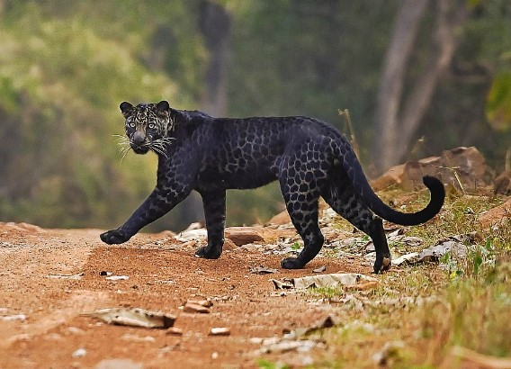
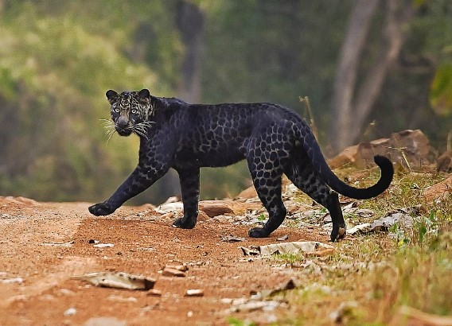

豹介紹
豹是貓科豹屬下的一種動物。
廣泛分布於非洲和亞洲的各個國家和地區。
環境適應能力強，行蹤隱秘，總體生存狀況好於牠的貓科親戚獅子和老虎及獵豹，但是有些豹亞種的現狀並不容樂觀。
不同亞種的豹毛色有淺黃，金黃，黃褐等不同。因為其渾身布滿圓形斑紋，所以又名金錢豹或花豹。
廣泛分布於非洲和亞洲的各個國家和地區。
環境適應能力強，行蹤隱秘，總體生存狀況好於牠的貓科親戚獅子和老虎及獵豹，但是有些豹亞種的現狀並不容樂觀。
不同亞種的豹毛色有淺黃，金黃，黃褐等不同。因為其渾身布滿圓形斑紋，所以又名金錢豹或花豹。
